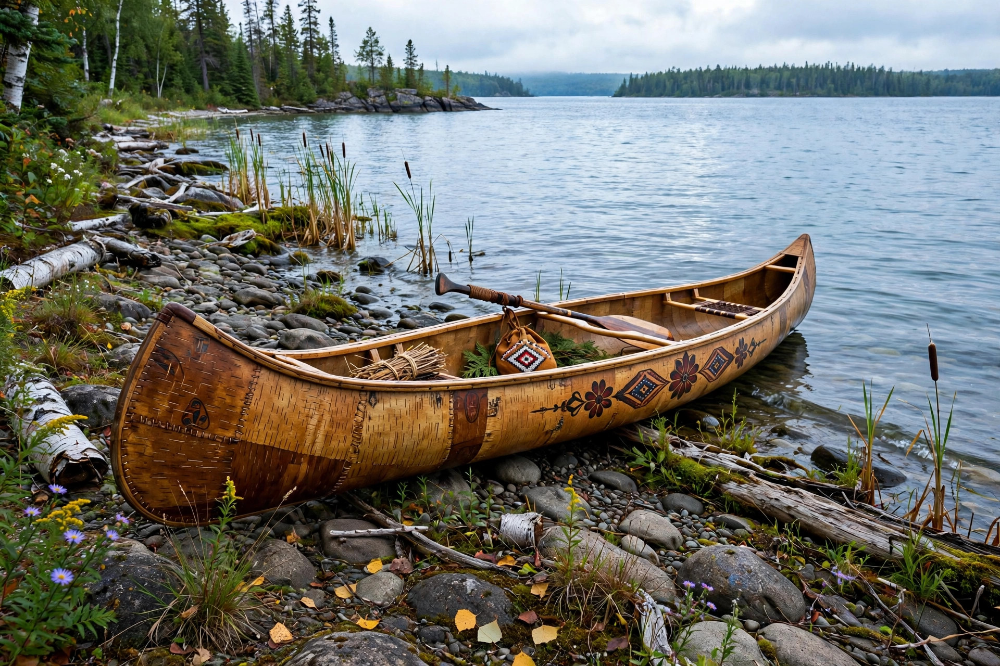

Ojibwe
| Ojibwe (Anishinaabe) | |
|---|---|
| Regions | Great Lakes, Canada and the United States |
| Language | Ojibwe language (Anishinaabemowin) |
| Related groups | Odawa, Potawatomi (Council of Three Fires) |
The Ojibwe (also spelled Ojibwa or Ojibway), who call themselves Anishinaabe, are an Indigenous people of North America, historically centred on the Great Lakes region of what is now Canada and the United States. They are among the largest Indigenous nations in North America.

1. History
2. Culture
3. Language
4. Present day
History
Ojibwe oral tradition tells of a migration from the Atlantic coast westward to the Great Lakes, guided by prophecy to find "the food that grows on water" — wild rice. By the 17th century the Ojibwe were key partners in the fur trade with the French, and with the Odawa and Potawatomi formed the Council of Three Fires.
Culture
Traditional Ojibwe society was organised into patrilineal clans (doodem) named for animals. Seasonal life centred on fishing, maple sugaring, hunting and the harvest of wild rice (manoomin). Birchbark canoes and wigwams were signature technologies.
Language
The Ojibwe language belongs to the Algonquian family and is spoken across a broad dialect continuum from Quebec to Manitoba and south into Minnesota and Wisconsin. Language revitalisation programmes have expanded in recent decades.
Present day
Ojibwe First Nations and tribal nations in Ontario, Manitoba, Minnesota, Wisconsin and Michigan exercise self-government, operate cultural and language programmes, and assert treaty rights to hunting, fishing and wild rice harvesting.
See also: Ojibwe language · Anishinaabe · Council of Three Fires